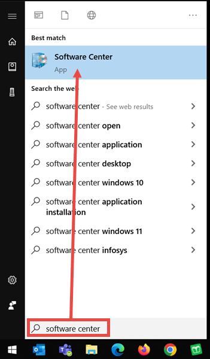
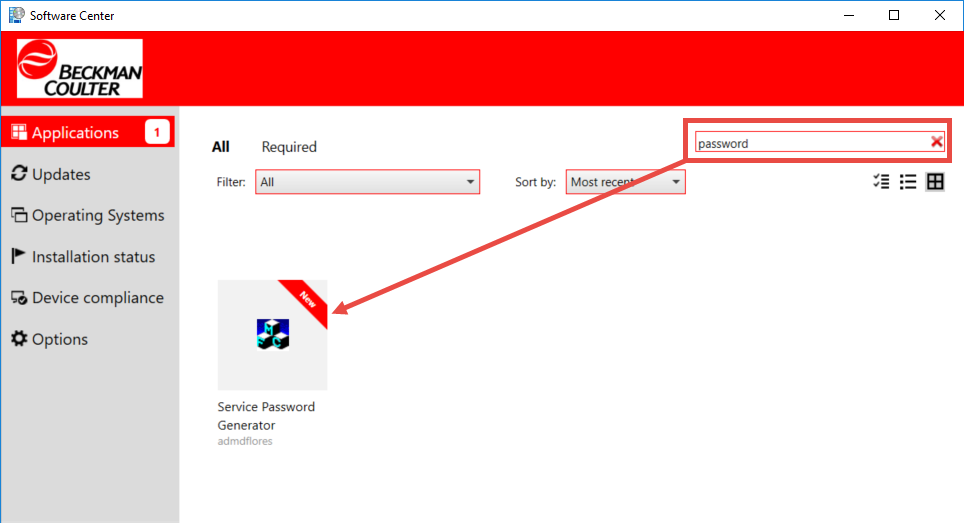
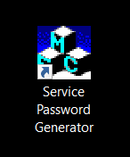
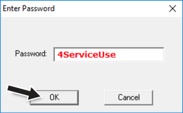
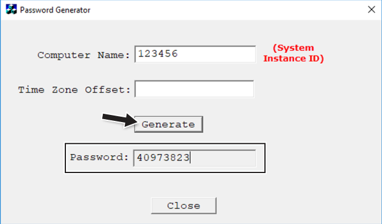
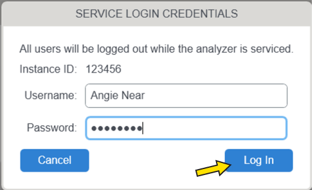
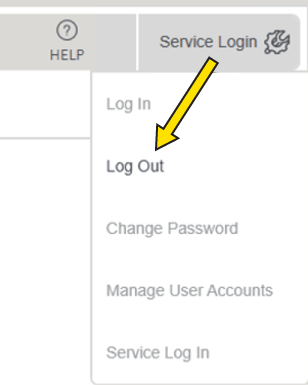

Signing In to the Console App Using the Service Login
This topic includes information about how to sign in to the Console App using the Service Login.
Note: Use the Service Login to perform tasks not visible to the lab user. These tasks include, but are not limited to, configuring GeoControl (setting the system location).
Note: Only Beckman Coulter personnel may use the Service Password Generator. Non-Beckman Coulter personnel (i.e. distributors or channel partners) must contact a local Beckman Coulter representative and ask them to use the Service Password Generator to generate a password for them.
| Table of Contents |
|---|
| Installing the Service Password Generator |
| Signing In to the Console App |
Installing the Service Password Generator
Use the Software Center, which is managed by Global IT, to install the Service Password Generator on the service laptop.
- Press the
Windows key and type
software center to open the Software Center app.

- Select Applications.
- In the search box type
password. The Service Password Generator will be displayed in the results.

- Select Service Password Generator to open the Application Details menu.
- Select Install.
- Follow the on-screen prompts to complete installation. The Service Password Generator shortcut will be displayed on the Desktop.

Signing In to the Console App
- In the Console App go to
. The Service Login Credentials dialog will be displayed. Take note of the
Instance ID. Leave the Service Login Credentials dialog open.
Note: If the system is logged in under a different user account, the tile may not say Guest but whichever account is logged in.
- Open the Service Password Generator app.
- The Enter Password dialog will be displayed.

- In Password type 4ServiceUse.
- Select
OK. The Password Generator dialog will be displayed.

- In Computer Name type the Instance ID you took note of.
- Type the
Time Zone Offset, if applicable. The default is 0 or blank.
Note: The Time Zone Offset is the difference in hours between the time zone of the PC running the Service Password Generator app and the time zone of the Instrument Console. For example, if the Service Password Generator app is operating in Eastern Time (UTC-05:00), and if the instrument is operating in Pacific Time (UTC-08:00), the Time Zone Offset value is 3.Note: The Time Zone Offset value may not be entered as a negative value. Therefore, if the value is negative, subtract its additive inverse from 24 to calculate the correct offset. For example, if the value is -6, the additive inverse is 6; subtract 6 from 24 to calculate the offset as 18.
- Select Generate. The password will be displayed in the Password box.
- Go to the Console App.

- In the Service Login Credentials dialog, type your name in Username.
- In Password type the password you generated using the Service Password Generator.
- Select Log In.
- You will now be signed in using the Service Login profile, as indicated in the upper right-hand corner on the Log In button, as well as by the red banner text across the top of the screen.
- After you have completed service activity, go to
to sign out.
